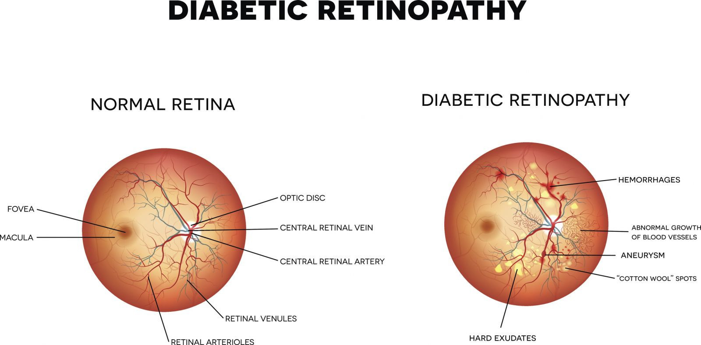
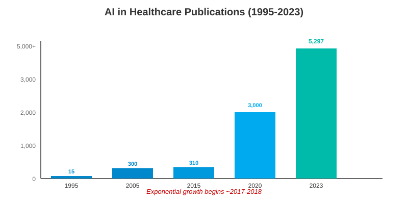

The Problem: The Diabetic Retinopathy Screening Gap
A Leading Cause of Preventable Blindness
- Global Impact: Over 103.12 million people affected worldwide.
- Thailand's Challenge: Only 45.54% (1.6M) of 3.6 million diabetic patients receive annual eye screenings.
- Critical Gap: Only ~1,500 ophthalmologists for 4-5 million diabetic patients.
- Prevention Potential: Over 90% of DR-related blindness is preventable with early detection.

The AI Revolution in Medicine
From Language to Multimodal Understanding
Large Language Models (LLMs)
Deep learning models trained on vast text data to understand and generate human-like language.
The Leap to Multimodal (MLLMs)
The evolution from text-only to processing multiple data types: Text + Images + Audio & More.
Explosive Growth in Healthcare
A dramatic increase in research and investment from tech leaders like Google, Microsoft, and NVIDIA.

Can General AI Models Bridge This Gap?
Investigating the Potential of MLLMs
MLLMs like GPT-4o and Gemini show promise, but are they reliable enough for a high-stakes clinical task like diagnosing DR?
Our Two-Phase Approach
Phase 1: Methodology for Baseline Evaluation
A Rigorous, Quantitative Evaluation
- Study Foundation: Based on "Can MLLMs Diagnose DR from Fundus Photos?"
- Dataset: 309 ultra-widefield fundus images from 188 patients.
- Ground Truth: Consensus diagnosis from 3 retina specialists (ETDRS classification).
- Models Tested: ChatGPT-4o, Claude 3.5 Sonnet, Gemini 1.5 Pro, Perplexity Llama 3.1.
- AI Tasks: Binary Classification (DR vs. No DR) & Severity Grading.
Dataset Collection
309 UWF fundus images
188 patients
Expert Annotation
3 retina specialists
ETDRS classification
MLLM Evaluation
4 AI models tested
Binary + Severity grading
Performance Analysis
Accuracy, Sensitivity, Specificity
Phase 1 Results: Binary Classification
High Specificity, Dangerously Low Sensitivity
Binary Classification Performance
ChatGPT-4o
Accuracy
78.3%
Sensitivity
34.2%
Specificity
92.1%
Claude 3.5
Accuracy
75.8%
Sensitivity
28.7%
Specificity
94.5%
Gemini 1.5
Accuracy
72.4%
Sensitivity
41.8%
Specificity
88.3%
Perplexity
Accuracy
69.1%
Sensitivity
38.5%
Specificity
85.2%
The Bottom Line: A high risk of missed diagnoses is unacceptable in a clinical setting.
Phase 1 Results: Severity Grading
Accuracy Plummets When Grading Disease Severity
| Model | No DR | Mild NPDR | Moderate NPDR | Severe NPDR | PDR | Overall |
|---|---|---|---|---|---|---|
| ChatGPT-4o | 82.3% | 28.1% | 31.5% | 24.7% | 52.3% | 43.8% |
| Claude 3.5 | 79.6% | 22.4% | 26.8% | 19.3% | 48.7% | 39.4% |
| Gemini 1.5 | 75.2% | 33.6% | 38.4% | 29.1% | 56.8% | 46.6% |
| Perplexity | 71.8% | 30.2% | 34.7% | 25.6% | 51.4% | 42.7% |
The Bottom Line: General MLLMs are unreliable for determining the urgency of care.
Phase 1 Conclusion
Off-the-Shelf MLLMs Fall Short of Clinical Standards.
Their highly variable accuracy and low sensitivity make them unsafe for clinical implementation... for now.
This highlights the clear need for a specialized, fine-tuned model.
Phase 2: Methodology for a Specialized Model
Fine-Tuning Multimodal LLMs for DR Analysis
Objective: Develop a fine-tuned multimodal large language model for accurate diabetic retinopathy classification and severity grading.
Foundation Models: LLaMA-7B, GPT-4o mini, or Gemini 1.5 Flash 8B
Development Process:
- Dataset Preparation: APTOS 2019 & EyEPACS with expert annotations
- QA Pair Generation: Structured questions covering all DR severities and DME
- Fine-Tuning: Train on NVIDIA A100 GPUs (LANTA/Cloud APIs)
- Evaluation: Measure Accuracy, Sensitivity, and Specificity
.png)
Phase 2: Fine-Tuning Method in Detail
A Structured Approach to Specialization
1. Data Collection & Preparation
Combined two major datasets:
- APTOS 2019: 3,662 training + 1,928 test images
- EyEPACS: 88,702 images (75% usable quality)
Classification: No DR, Mild/Moderate/Severe NPDR, PDR, and DME detection
2. Model Training & Infrastructure
Technology Stack:
- Software: Python with PyTorch/TensorFlow + CUDA toolkit
- Hardware: NVIDIA A100 GPUs via LANTA supercomputer or cloud APIs
- Foundation: LLaMA, GPT-4o mini, or Gemini 1.5 Flash 8B
3. Quantitative Evaluation
Model performance was rigorously assessed using key clinical metrics:
Accuracy
Overall correctness
Sensitivity
Correctly finds DR
Specificity
Correctly finds No DR
Phase 2 Results: Specialization Leads to Success
Fine-Tuning Delivers Substantial Performance Gains
10-15% ▲
Accuracy Increase
models/gemma-3-12b-it
8% ▲
Accuracy Increase
models/gemma-3-4b-it
Conclusion: Domain-specific fine-tuning is crucial to transform AI into an effective clinical instrument.
Application Prototype
AI-Assisted DR Screening System
📁 Upload Image
patient_fundus_001.jpg uploaded successfully
🔍 Image Description
Ultra-widefield fundus photograph showing microaneurysms, dot hemorrhages, and hard exudates in the posterior pole...
⚕️ Clinical Assessment
Diagnosis: Moderate Non-Proliferative Diabetic Retinopathy (NPDR)
Confidence: 87.3%
Recommendation: Follow-up in 3-6 months
Overall Conclusion & Future Work
A Promising Path Towards AI-Assisted Eye Care
Specialized fine-tuning can create reliable, cost-effective, and accessible tools to assist healthcare providers in the fight against diabetic blindness.
Implementation Roadmap
✅
Phase 1
Baseline Evaluation
MLLM Performance Analysis
✅
Phase 2
Model Fine-Tuning
MED-Gemma Specialization
🔄
Phase 3
Clinical Validation
Real-world Testing
📋
Phase 4
Deployment
Hospital Integration
Thank You
Questions?
Acknowledgements: This research is supported by the Fundamental Fund (FF) for the fiscal year 2025, allocated from the Science, Research and Innovation Promotion Fund, Suranaree University of Technology.
[Email: ittipon@g.sut.ac.th]